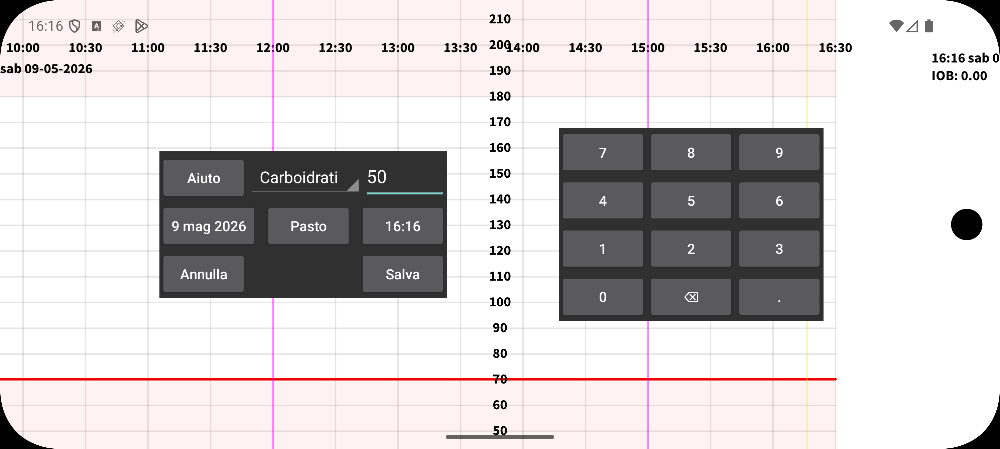

Con Nuovo valore puoi inserire numeri associati a un'etichetta arbitraria. Puoi impostare le etichette in menu sinistro→Impostazione→Etichette numeriche. I valori inseriti con una particolare etichetta saranno mostrati a un'altezza nel grafico determinata dall'etichetta.
Puoi modificare il valore in seguito tenendolo premuto a lungo. Puoi anche selezionarlo dalla lista dei valori inseriti in Menu centrale sinistro→Lista.
È anche possibile ricevere dati sulle dosi di Insulina da NovoPen® 6 o NovoPen Echo® Plus scansionando la penna NFC. Dopo la scansione puoi cambiare sotto quale etichetta vengono salvate le dosi in Juggluco e limitare le dosi a quelle dopo una certa data e ora. Quando sono presenti centinaia di dosi nella memoria della penna, possono volerci più di 30 secondi prima che siano tutte ricevute via NFC da Juggluco.
Alcuni glucometri possono inviare misurazioni della glicemia da puntura del dito tramite Bluetooth a Juggluco. Vedi menu sinistro→Impostazione→Scambio dati→ Glucometri.
In Menu sinistro->Impostazione->Etichette numeriche è specificato anche sotto quale etichetta inserisci i carboidrati di un pasto. In Nuovo valore, viene mostrato un pulsante Pasto per questa etichetta. Toccando questo pulsante Pasto appare una schermata in cui costruisci il pasto a partire dai suoi ingredienti. Il contenuto totale di carboidrati viene quindi calcolato per te. In alternativa, puoi fornire la quantità di carboidrati desiderata e Juggluco calcolerà quanto di un ingrediente ti serve.
Escludi: Esclude una misurazione della glicemia dalle calibrazioni, perché il livello di glucosio è in aumento o in diminuzione oppure il sensore è ancora in fase di riscaldamento.